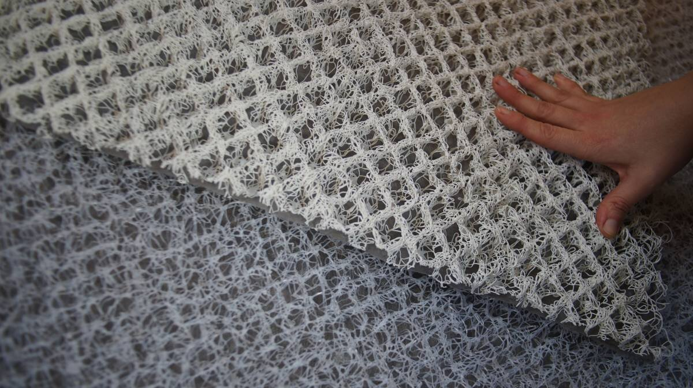

moisture prevention underliner
In winter, living on a plastic boat means having to fight condensation. Insulation plays a bit part in limiting condensation, but allowing air to flow is just as important.
We got sheets of high-strength mesh material that helps elevate cushions, promoting good air flow which can help reduced condensation as well mildew/mold growth. This material is made from a series thickly-coiled polypropylene strands, which creates a firm but open surface through which air can flow. The woven mat is topped by a light synthetic fabric layer that provides a smooth surface for a cushion to rest on.

The material can be cut larger than the cushion width and length on sides that come into contact with the hull so that air can flow all around the cushion.
This material is lightweight, and can be cut with scissors. When cutting little bits of stiff material will come off, be sure to scoop those up afterwards. Sheets are a maximum of 99cm (39 in) wide, but can be joined together to cover the size of a cushion.

Even with this material in place, lifting the cushions once in a while to let them air out is good practice.
Notes. There are many similar products on the market(this isn't Genuine Hypervent, it's a copycat seems like), we chose it not because we think it is the best, but because it's what was available locally and what was within reasonable walking distance of our mooring spot. Hopefully this will be useful to protect newly re-upholstered cushions (we will experiment with it and will report here on how well it performs).